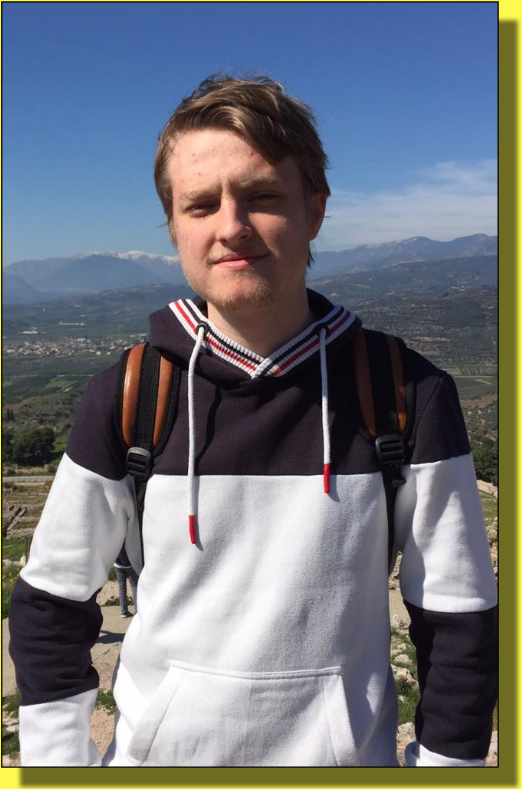

About me
Info dump
- 20 years old
- Primarily a graphical and UX designer but can code too.
- Has 4 brothers
- Had countless jobs in various industries
- Very outgoing and ready to try new things
- Fails fast and learns fast (not afraid to make mistakes and learn from them)
Contact me
You can contact me at Emil@huneck.dk or huneck.emil@gmail.com
and if you wish to know more about me then you can download my CV down below